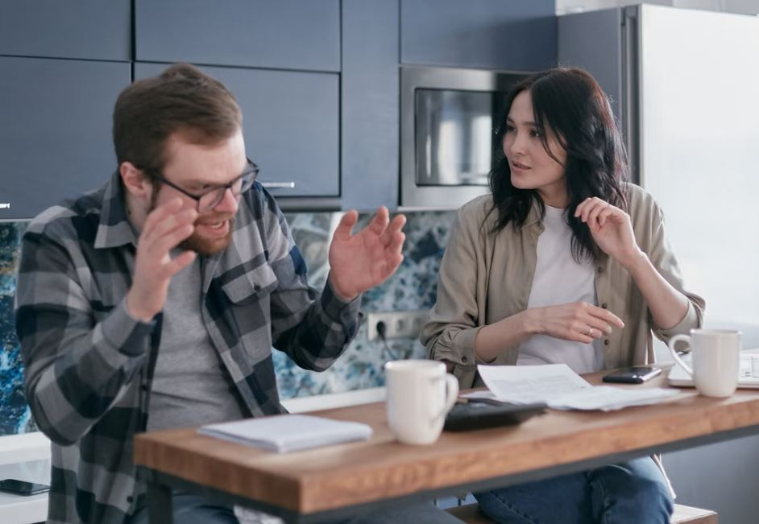

Ammettiamolo: a nessuno piace litigare. Eppure succede, prima o poi, a tutte le coppie, anche a quelle che sembrano perfette da fuori.
La buona notizia? Litigare in coppia non è per forza un problema. Anzi, se sai come farlo, può addirittura rafforzare il rapporto.
Il problema non è se discutete, ma come lo fate. E su questo, spoiler, quasi nessuno vi ha mai spiegato niente di concreto sui litigi di coppia.
Perché si litiga in coppia (e perché non è sempre un male)
Partiamo da una cosa scomoda: se non discutete mai, non è necessariamente un buon segno.
Spesso significa solo che uno dei due (o entrambi) evita il confronto. E quello che non viene detto, prima o poi, esplode. O peggio, si spegne lentamente insieme all’intimità.
I conflitti di coppia nascono per motivi banali, chi doveva buttare la spazzatura, chi ha lasciato i piatti sporchi, ma quasi sempre nascondono qualcosa sotto: bisogni non ascoltati, aspettative diverse, stanchezza accumulata.
Uno studio americano citato più volte in ambito psicologico ha mostrato che le coppie che discutono in modo civile tendono, nel tempo, a essere più stabili di quelle che evitano ogni scontro. Non è un incoraggiamento a litigare per sport, però toglie un po’ di pressione: la lite in sé non è il nemico.
Litigio sano vs litigio tossico: come riconoscere la differenza
Qui sta il punto che quasi nessuno spiega bene. Non tutte le discussioni di coppia sono uguali, e vale la pena imparare a distinguerle.
Un litigio sano ha queste caratteristiche:
- si parla del problema specifico, non si tira in ballo tutto il resto
- si alza la voce, ok, ma non si insulta la persona
- dopo, si torna a parlarsi (anche se serve un po’ di tempo)
Un litigio tossico invece include:
- insulti diretti alla persona (“sei sempre stato un fallito”, non “questa cosa mi ha ferito”)
- silenzio punitivo che dura giorni
- minacce di lasciarsi usate come arma per vincere la discussione
- gaslighting, cioè far sentire l’altro “pazzo” o “esagerato” per invalidare quello che sente
Se riconosci più di due voci in questa seconda lista, e capita spesso, forse il problema non è come litigate ma qualcosa più profondo nella relazione. E va bene chiedere aiuto, non è un fallimento.
Litigare in coppia bene: il metodo in 3 fasi
Passiamo al pratico. Molti consigli online si concentrano solo sul momento della lite. Ma come risolvere i conflitti di coppia dipende da come lavori su tre fasi diverse: prima, durante e dopo.
Prima della discussione
Non serve aspettare che la tensione esploda per parlarne.
Se senti che qualcosa ti pesa, dillo prima che diventi un macigno. Una frase tipo “Ehi, c’è una cosa che mi sta un po’ disturbando, possiamo parlarne stasera?” vale molto più di un accumulo silenzioso che poi salta fuori tutto insieme, male, alle 23 di sera.
Stabilite anche, magari in un momento di calma, una specie di “regola del gioco”: niente urla, niente cellulari in mano durante la discussione, e una parola di tregua se le cose si scaldano troppo (tipo “pausa”, banale, ma funziona).
Durante la lite: le frasi da dire (e quelle da evitare)
Questo è il cuore del problema. Ecco un piccolo confronto pratico:
| Da evitare | Da dire invece |
|---|---|
| “Tu fai sempre così” | “In questo momento mi sento…” |
| “Non hai buttato la spazzatura, toccava a te!” | “Ho notato che la spazzatura non è stata buttata” |
| “Sei uguale a tua madre” | “Questa cosa specifica mi ha dato fastidio” |
| Silenzio totale, muso, telefono in mano | “Ho bisogno di 10 minuti per calmarmi, poi ne parliamo” |
Il trucco, se vogliamo chiamarlo così, è parlare in prima persona invece che puntare il dito. Cambia tutto, davvero. “Tu hai fatto” suona da tribunale. “Io mi sento” apre un dialogo.
E poi c’è l’ascolto, quello vero, non quello che aspetta solo il proprio turno per ribattere. Quando il partner parla, lascialo finire. Non serve commentare ogni frase, a volte basta ascoltare.
Dopo il litigio: come fare pace senza fingere che non sia successo niente
Fare pace non significa far finta di nulla. Significa chiudere davvero la questione, non spazzarla sotto il tappeto.
Un buon modo per farlo: ammettere la propria parte di responsabilità, anche se piccola. “Forse ho reagito in modo un po’ esagerato” apre più porte di qualsiasi silenzio orgoglioso.
Piccoli gesti aiutano parecchio, una passeggiata insieme, una doccia, quattro chiacchiere leggere davanti a un gelato. Niente di magico, solo tempo condiviso che ricuce quello che si è rotto per un attimo.

Come smettere di litigare (troppo spesso)
Se la sensazione è che litigate sempre, per le stesse cose, senza mai risolvere niente, quello è un campanello d’allarme diverso, va detto chiaramente. Capire come smettere di litigare in coppia su questi punti fissi è spesso la vera svolta.
Un esercizio che viene consigliato spesso in terapia di coppia: quando scoppia la lite, fermatevi entrambi e andate in un luogo “neutro” della casa scelto in anticipo (non la camera da letto). Lì, e solo lì, potete riprendere a parlarne. Sembra strano, ma spesso basta il semplice gesto di spostarsi per disinnescare la rabbia automatica.
Un altro trucco, testato da alcuni ricercatori: scrivere il conflitto su un foglio come se lo raccontasse una terza persona che vuole bene a entrambi. Bastano pochi minuti, qualche volta all’anno, per cambiare prospettiva su quello che vi fa scontrare di continuo.
Litigare per messaggio: perché è quasi sempre un errore
Una cosa che quasi nessuno dice chiaramente: litigare via WhatsApp è una pessima idea.
Manca il tono di voce, manca lo sguardo, e ogni frase può essere letta con un’intonazione diversa da quella che intendevi. Un “ok” secco scritto di fretta può sembrare freddezza pura, quando magari stavi solo guidando.
Se la discussione è delicata o si sta scaldando, meglio fermarsi e dirsi: “Ne parliamo di persona quando ci vediamo.” Non è evitare il problema, è solo scegliere il canale giusto per affrontarlo.
Comunicazione quotidiana: il vero antidoto (non solo durante la lite)
Qui arriva forse il punto più importante di tutto l’articolo: la comunicazione che conta davvero non è quella che usate durante la lite, ma quella di tutti i giorni. È lì che si costruisce (o si smonta) la base di ogni comunicazione di coppia sana.
Le coppie che litigano “bene” di solito sono quelle che si parlano anche del niente, di come è andata la giornata, di cosa li preoccupa, di cosa li rende felici. Quando c’è questa base, un litigio pesa meno, perché non nasce nel vuoto ma dentro una relazione che comunica già.
Piccole abitudini aiutano parecchio: un check-in settimanale di 10 minuti su “come stiamo”, chiedere esplicitamente “hai bisogno che ti ascolti o che ti aiuti a risolvere?” prima di dare consigli non richiesti (che, va detto, sono una delle cause di attrito più sottovalutate).
Quando chiedere aiuto a un terapeuta di coppia
Non c’è nulla di sbagliato nel rivolgersi a un professionista. Anzi.
Se i litigi si ripetono sempre uguali, se non trovate mai una via d’uscita da soli, o se riconoscete i segnali del litigio tossico di cui parlavamo prima, un terapeuta di coppia può darvi strumenti che da soli è difficile costruire.
Non è l’ultima spiaggia prima della fine. È, molto più spesso, quello che serve per continuare a stare bene insieme.